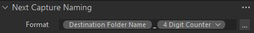
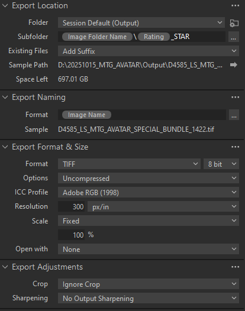
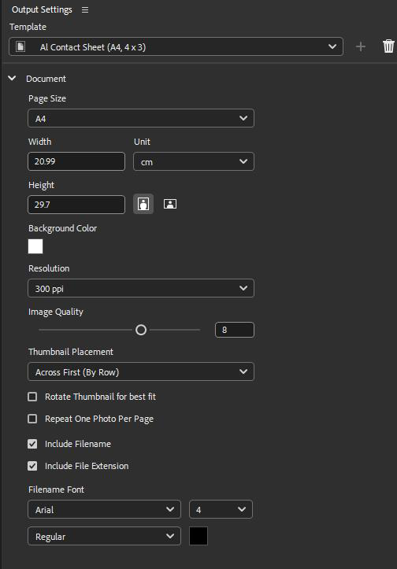
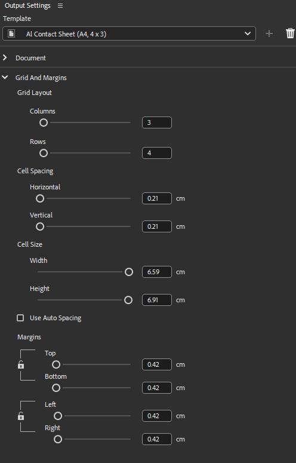
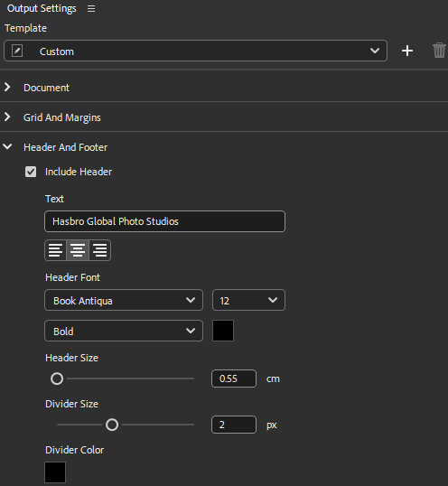

DIGITAL TECH DAILY WORKFLOW
A Complete Walkthrough From Arrival to Upload
YOUR DAY AS DIGITAL TECH
This guide walks you through a complete shoot day from start to finish. Follow these steps in order, and you'll have everything you need to successfully support a photo shoot.
WHEN YOU ARRIVE
1Get Your Call Sheet
First thing: grab today's call sheet. This document has EVERYTHING you need:
- Today's shoot type (LIFESTYLE, PRODUCT, or ECOMM)
- All product information with full 9-digit product numbers
- Brand information
- Any special instructions
IMPORTANT
Keep this call sheet with you all day.
MORNING SETUP (Before Photographer Arrives)
2Create Your Session Folder
On the internal hard drive of your terminal, you'll be creating today's main session folder when you set up Capture One in the next step.
Naming Format:
YYYYMMDD_BRAND_DESCRIPTOR
Example:
Today is October 21, 2025, you're shooting Magic The Gathering Avatar cards:
20251021_MTG_AVATAR
Breaking it down:
20251021 = Today's date (Year, Month, Day)MTG = Brand abbreviation (see reference list at end of guide)AVATAR = Brief description of what you're shooting
3Open Capture One and Create New Session
- Launch Capture One (newest Studio version)
- Select "New Session"
- When prompted for location, select the internal hard drive
- For the name, enter:
20251021_MTG_AVATAR
- Capture One will create this folder and automatically generate subfolders inside (Capture, Output, Trash, etc.)
4Create Product Folders
Now you're going to create a separate folder for each product on today's call sheet. These folders go inside the Capture folder of your session.
Look at your call sheet.
Let's say you have three products today:
- Spider-Man Web Slinger action figure
- Spider-Man Classic action figure
- Spider-Man Villain Pack
For each product, create a folder using this format:
G1234_LS_SPD_PRODUCTNAME_VARIANT
Here's what each part means:
G1234 = First 5 digits of the product number
- Look at your call sheet
- Find the full 9-digit product number (example: G12345678)
- Only use the first 5 digits for now: G1234
- Write down the full 9-digit number somewhere - you'll need it later
LS = Shot type
- LS for Lifestyle (90% of shoots)
- PROD for Product shots
- This will be on your call sheet
SPD = Brand abbreviation
- Use the brand abbreviation list at the end of this guide
- Example: SPD = Spider-Man
PRODUCTNAME_VARIANT = The actual product name
- Use underscores between words
- Example: SPIDERMAN_WEB_SLINGER
Your three folders would look like:
G1234_LS_SPD_SPIDERMAN_WEB_SLINGER
G5678_LS_SPD_SPIDERMAN_CLASSIC
G9012_LS_SPD_SPIDERMAN_VILLAIN_PACK
5Add Folders to Favorites
In Capture One, find all the folders you just created and add them to your Favorites panel. This lets you quickly switch between products throughout the day.
- Right-click each folder
- Select "Add to Favorites"
- Do this for every product folder
6Set Up Automatic File Naming
CRITICAL
This makes sure every photo gets named correctly as it comes in.
In Capture One, go to the Next Capture Naming section and set up these tokens:

Set tokens to: Destination Folder Name _ 4 Digit Counter
What this does:
When you shoot into the folder
G1234_LS_SPD_SPIDERMAN_WEB_SLINGER, Capture One will automatically name each photo:
G1234_LS_SPD_SPIDERMAN_WEB_SLINGER_0001.CR3
G1234_LS_SPD_SPIDERMAN_WEB_SLINGER_0002.CR3
G1234_LS_SPD_SPIDERMAN_WEB_SLINGER_0003.CR3
You don't have to do anything - it happens automatically.
7Set Up Equipment with Photographer
When the photographer arrives:
- Help set up lights and modifiers as needed
- Connect the camera to Capture One (tethered shooting)
- Make sure the cable is secure
- Do a test shot to verify everything captures correctly
8Set Your First Capture Folder
Before shooting starts:
- In your Favorites panel, click the first product folder
- Set it as the Capture Folder
- Double-check the folder name appears correctly in Next Capture Naming
- Tell the photographer you're ready
DURING THE SHOOT
Your Job: Monitor and Communicate
You're not taking photos - you're watching the technical side so the photographer can focus on creative.
Watch your Capture One window for:
- ✓ Each photo appearing after the shutter clicks
- ✓ Camera connection staying active
- ✓ Images looking properly exposed (not too dark/too bright)
- ✓ No error messages
Alert the photographer immediately if:
- Camera disconnects
- Images stop coming in
- Photos look too dark or too bright
- You see any technical errors
Switching Between Products
When the photographer is ready to move to the next product:
- In Favorites panel: Click the next product folder
- Set as Capture Folder
- Verify the new folder name appears in Next Capture Naming
- Tell photographer "We're now shooting into [product name]"
- Resume shooting
Repeat this every time you switch products.
Star Ratings (Not Your Job, But Here's What's Happening)
Throughout the day (or at the end), the brand representative will go through images and rate them:
- 0 STAR = Everything (unrated/unselected images)
- 1 STAR = Their selects (the hero images they want)
- 3 or 5 STAR = Special separations (only if needed - like hand shots or gif sequences)
Most shoots only use 0 and 1 star. The brand rep handles this - you don't need to do anything.
If the brand rep asks you to star an image:
Occasionally the brand person may see a shot they like during shooting and ask you to star it. Just assign it
1 star. The brand rep can always undo this later when they make their final selects if they find a different photo they prefer.
SPECIAL INSTRUCTIONS: If This Is an ECOMM Shoot
Look at your call sheet - does it say ECOMM?
If YES (ECOMM shoot):
- The brand rep will give you a visual guide showing how shots should be cropped
- During or right after shooting: Use Capture One's crop tool to crop each shot
- Have the brand rep approve the crop before moving on
- IMPORTANT: Remember this later during export - you'll need to check "Respect Crop"
If it's LIFESTYLE or PRODUCT (regular shoots):
- Do NOT crop anything
- Images are delivered uncropped
AFTER THE SHOOT (Processing Time)
9Export Your Images
Once shooting is done, it's time to turn your CR3 files into TIFFs.
Open the Export window in Capture One.
First, set up your recipe:

Export Location settings showing subfolder naming
Under the Export Location tab, find the Subfolder field and enter:
Image Folder Name\Rating_STAR
What this does:
Creates organized folders like this:
Output/
└─ G1234_LS_SPD_SPIDERMAN_WEB_SLINGER/
├─ 0_STAR/ ← All unrated images
└─ 1_STAR/ ← Client selects
Next, check your Export Adjustments:
If this was an ECOMM shoot:
☑ CHECK "Respect Crop"
If this was LIFESTYLE or PRODUCT (regular shoots):
☐ LEAVE "Ignore Crop" selected (default)
The export format settings should already be correct:
- Format: TIFF
- 8 bit, Uncompressed
- ICC Profile: Adobe RGB (1998)
- Resolution: 300 px/in
- Scale: Fixed at 100%
Now export:
- Select all images from today's shoot
- Click Export
- Wait for all files to process
- Don't close Capture One yet - you'll need it if any exports fail
MAKING YOUR PDF CONTACT SHEETS
10Open Adobe Bridge
Once exports are complete, navigate to your Output folder.
You should see folders like:
Output/
└─ G1234_LS_SPD_SPIDERMAN_WEB_SLINGER/
├─ 0_STAR/
└─ 1_STAR/
11Create PDFs for Each Star Rating
Setting Up Bridge Output Module:
In Adobe Bridge, go to the Output module. You'll need to configure the PDF settings.

Document settings for PDF creation

Grid and Margins settings

Header and Footer settings
Document Settings:
- Template: AI Contact Sheet (A4, 4 x 3)
- Page Size: A4
- Width: 20.99 cm
- Height: 29.7 cm
- Background Color: White
- Resolution: 300 ppi
- Image Quality: 8
- Thumbnail Placement: Across First (By Row)
- ☐ Rotate Thumbnail for best fit (unchecked)
- ☐ Repeat One Photo Per Page (unchecked)
- ☑ Include Filename
- ☑ Include File Extension
- Filename Font: Arial, Size 4, Regular
Grid And Margins:
- Columns: 3
- Rows: 4
- Cell Spacing:
- Horizontal: 0.2 cm
- Vertical: 0.2 cm
- Cell Size:
- Width: 6.59 cm
- Height: 6.91 cm
- ☐ Use Auto Spacing (unchecked)
- Margins: 0.42 cm on all sides (Top, Bottom, Left, Right)
Header And Footer:
- ☑ Include Header
- Text: "Hasbro Global Photo Studios"
- Text Alignment: Left
- Header Font: Book Antiqua, Size 12, Bold
- Header Size: 0.55 cm
- Divider Size: 2 px
- Divider Color: Black
Creating the PDFs:
For the 0_STAR folder:
- Open Adobe Bridge
- Navigate to
Output/G1234_LS_SPD_SPIDERMAN_WEB_SLINGER/0_STAR/
- Select all TIFF files in this folder
- Go to the Output module
- Verify all settings match those above
- Name the PDF:
0_STAR.pdf
- Save it in the PARENT folder (up one level, alongside the 0_STAR and 1_STAR folders)
For the 1_STAR folder:
- Navigate to
Output/G1234_LS_SPD_SPIDERMAN_WEB_SLINGER/1_STAR/
- Select all TIFF files
- Same PDF settings
- Name the PDF:
1_STAR.pdf
- Save it in the PARENT folder (alongside the star folders)
If there are 3_STAR or 5_STAR folders: Repeat the same process for those.
Repeat for every product you shot today.
When you're done, each product folder should look like:
G1234_LS_SPD_SPIDERMAN_WEB_SLINGER/
├─ 0_STAR/
│ └─ [All the TIFF files]
├─ 1_STAR/
│ └─ [All the TIFF files]
├─ 0_STAR.pdf
└─ 1_STAR.pdf
ORGANIZING FILES FOR DELIVERY
12Add Full Product Numbers
Right now your product folders have 5-digit numbers. You need to add the rest.
Pull out your call sheet again. Find those full 9-digit product numbers you wrote down earlier.
For each product folder inside the Output folder:
Example:
Current name: G1234_LS_SPD_SPIDERMAN_WEB_SLINGER
Full 9-digit number from call sheet: G12345678
New name: G12345678_LS_SPD_SPIDERMAN_WEB_SLINGER
Rename each folder manually - just add those 4 missing digits after the first 5.
Do this for every product folder.
13Rename and Move the Output Folder
Why do this?
The
_TIFF name means this folder can be safely deleted later if someone needs drive space. The original CR3s are always protected.
Right now your session looks like:
20251021_MTG_AVATAR/
├─ Capture/
│ └─ [CR3 files in product folders]
└─ Output/
└─ [TIFF files in product folders]
Here's what to do:
- Navigate to the Output folder (it's inside your session folder)
- Rename it: Add
_TIFF to the session name
- Example:
20251021_MTG_AVATAR_TIFF
- Move this folder OUT of the session folder
- Place it at the same level as the session folder
You should now see this on your drive:
20251021_MTG_AVATAR/ ← Original session (CR3 files)
20251021_MTG_AVATAR_TIFF/ ← Processed files (TIFFs & PDFs)
UPLOADING TO THE SERVER
Files go to two different server locations. Here's where each goes:
14Upload Original Session (CR3 Files)
What: The entire 20251021_MTG_AVATAR folder
Where: PhotoArchive\2025Photography\[BRAND]\
Example:
20251021_MTG_AVATAR → PhotoArchive\2025Photography\MTG\
Upload the whole folder.
15Upload Processed Files (TIFFs & PDFs)
What: Individual product folders from inside the _TIFF folder
Where: Photo Studio\2025 Photography\[BRAND]\
IMPORTANT
Upload each product folder
separately, NOT the entire _TIFF parent folder.
Example:
G12345678_LS_SPD_SPIDERMAN_WEB_SLINGER → Photo Studio\2025 Photography\SPD\
G12345678_LS_SPD_SPIDERMAN_CLASSIC → Photo Studio\2025 Photography\SPD\
G12345678_LS_SPD_VILLAIN_PACK → Photo Studio\2025 Photography\SPD\
Each product folder goes into the correct brand folder on the server.
END OF DAY
16Final Checklist
Go through this list before you leave:
- All exports completed successfully
- PDFs created for all star-rated folders (0_STAR, 1_STAR, etc.)
- Product folders renamed with full 9-digit numbers
- Output folder renamed to
SESSIONNAME_TIFF
- Output folder moved out to sit next to session folder
- Original session folder uploaded to PhotoArchive
- Individual product folders uploaded to Photo Studio
- Equipment cleaned and put away
- Workspace cleaned and ready for tomorrow
17Leave Files on Terminal
DO NOT DELETE FILES
Do not delete files from the computer terminal.
- Files stay on the terminal until full-time staff clean them up
- If drive space is critically needed, delete the oldest
_TIFF folders first
- Never delete original session folders unless told to by full-time staff
BRAND ABBREVIATIONS REFERENCE
Use these brand abbreviations when creating folder names and for server uploads:
| Abbreviation |
Brand Name |
| BA |
Baby Alive |
| BB |
Beyblade |
| FUR |
Furby |
| GHB |
GhostBusters |
| GIJ |
GI Joe |
| GMS |
Games |
| HDP |
HYDROPODS |
| IMF |
Iron Man And Friends |
| MM |
Mix Mashers |
| MPH |
Mr. Potato Head |
| MTG |
Magic The Gathering |
| MVL |
Marvel |
| NAN |
Nanomals |
| Nerf |
Nerf |
| PD |
PlayDoh |
| PEP |
PeppaPig |
| PR |
Power Rangers |
| SAF |
Spidey And Friends |
| SOA |
Super Soaker |
| SPD |
Spider-Man |
| SW |
Star Wars |
| SWOF |
Secret World Of Fairies |
| TRA |
Transformers |
Can't find a brand?
Check the photo studio server - there's a complete list in the brand folders.
TROUBLESHOOTING
Camera Disconnects During Shoot
- Check if the camera battery has died - if so, provide a charged battery to the photographer
- Check USB cable - make sure it's firmly connected
- In Capture One: Go to Camera menu → Reconnect
- Still not working? Restart Capture One
- Last resort: Power cycle the camera
Images Aren't Capturing
- Check if the camera battery has died - if so, provide a charged battery to the photographer
- Is the correct Capture Folder selected in Favorites?
- Is the camera in tethered mode?
- Is there a memory card in the camera? (Required even for tethered)
- Try taking the USB cable out and plugging it back in
Export Fails or Stops
- Check how much space is left on the hard drive
- Make sure the Output folder exists
- Try exporting a smaller batch of images first
- If one product fails, try exporting others - you can troubleshoot that one separately
Photos Have Wrong Names
- Check that "Destination Folder Name_4 Digit Counter" tokens are set
- Make sure the correct folder is set as Capture Folder
- Double-check folder names match the format exactly
Can't Find PDFs After Creating Them in Bridge
- Did you select all the TIFF files before creating the PDF?
- Did you save the PDF in the correct folder (parent folder, alongside the star folders)?
- Check your Bridge output settings match the specifications in this guide
Not Sure Which Folder to Shoot Into
- Check with photographer which product you're shooting
- Look at your call sheet
- Select the matching folder from Favorites
- When in doubt, ASK - better to pause 10 seconds than shoot into the wrong folder
NOTES
Use this space for shoot-specific notes or special instructions...
Last Updated: October 28, 2025
Version: 1.0
Questions or Issues? Contact Lead Digital Tech
You've got this! Follow these steps in order, stay organized, and communicate with your photographer. This might seem like a lot the first time, but after a few shoots it becomes second nature.